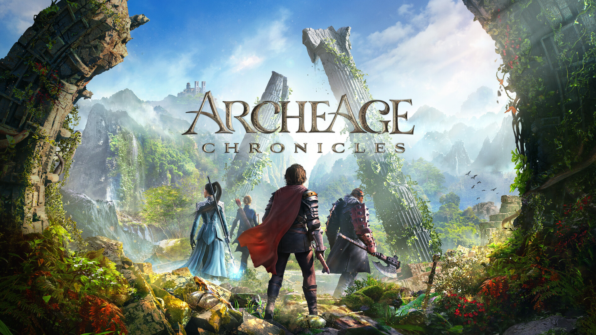

NO RADAR13 SETEMBRO, 2026
Mundos para explorar.
Histórias para viver.
MMORPGs, aventuras e novas descobertas.
Encontre seu próximo mundo no Dihhz MMORPG.

DESTAQUE DA VEZArcheAge
LANÇAMENTO / PC
ArcheAge
Chronicles
Uma nova jornada em Auroria.
Confira o que sabemos sobre o lançamento.
No seu radar
DESTAQUES MMORPG


D.
Sua próxima guilda.
Sua próxima grande aventura.